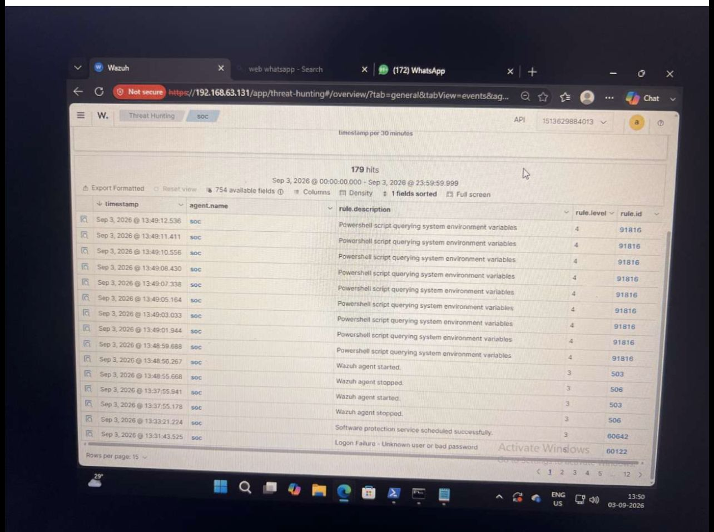
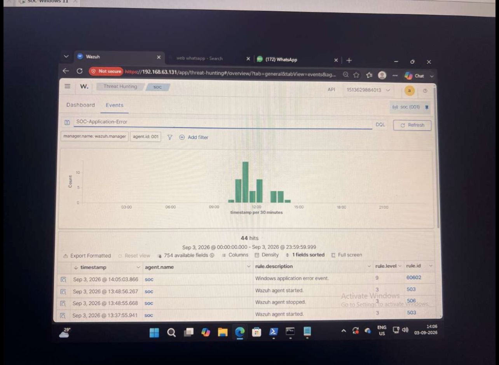
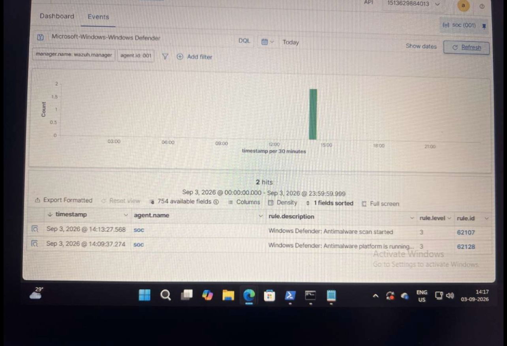

1. Project Overview
This project demonstrates Windows security monitoring using Wazuh as a centralized security monitoring and analysis platform.
The purpose of the lab was to observe Windows security and system events, collect relevant telemetry and understand how the information can be used during a security investigation.
Objectives
- Monitor Windows security events.
- Review successful authentication activity.
- Review failed authentication activity.
- Monitor PowerShell-related activity.
- Review application events.
- Review Windows Defender events.
- Monitor process creation events.
- Understand firewall monitoring limitations.
- Use collected evidence to support security analysis.
2. Tool Configuration
Wazuh was used to centralize and review telemetry generated by the Windows endpoint. Windows event information provides useful context for authentication, process execution and endpoint security monitoring.
Tools Used
- Wazuh
- Windows Event Viewer
- Windows Security Event Logs
- PowerShell
- Windows Defender
- Windows Firewall
Important Windows Event IDs
| Event ID | Description | Security Relevance |
|---|---|---|
| 4624 | Successful logon | Useful for monitoring authentication activity. |
| 4625 | Failed logon | Can help identify repeated or suspicious authentication failures. |
| 4688 | Process creation | Useful when investigating suspicious process execution. |
3. Test Requests and Lab Simulation
Controlled activities were reviewed to verify that relevant Windows telemetry could be observed through the monitoring environment.
Test 1 — Successful Logon
Successful authentication activity was reviewed using Windows Security Event ID 4624.
Test 2 — Failed Logon
Failed authentication activity was reviewed using Windows Security Event ID 4625.
Test 3 — PowerShell Activity
PowerShell-related activity was reviewed to determine whether the monitoring environment provided useful endpoint telemetry.
Test 4 — Process Creation
Process creation activity was reviewed using Windows Event ID 4688.
4. SIEM Evidence
The following screenshots represent the evidence collected during the Windows security monitoring exercise.

Figure 1 — Wazuh dashboard showing the monitoring environment.

Figure 2 — Successful Windows logon event, Event ID 4624.

Figure 3 — Failed Windows logon event, Event ID 4625.

Figure 4 — PowerShell-related detection observed during monitoring.

Figure 5 — Application-related event observed during the lab.

Figure 6 — Windows Defender event, Event ID 1001.

Figure 7 — Windows process creation event, Event ID 4688.

Figure 8 — Simulated firewall monitoring blind spot.
5. Actual Observations
The lab demonstrated that Windows generates different types of security and system telemetry that can be useful during endpoint investigation.
Authentication Activity
Successful and failed logon events provide visibility into authentication activity. Event 4624 represents successful authentication, while Event 4625 represents a failed logon.
PowerShell Activity
PowerShell is a legitimate administrative tool, but its activity can also be relevant during security investigations. The context of the command, user, parent process and related events should be considered.
Process Creation
Process creation telemetry provides additional information about programs executed on a Windows endpoint. Unusual processes or suspicious parent-child relationships may require further investigation.
Windows Defender
Windows Defender events can provide additional endpoint security context and can be correlated with other events during an investigation.
6. Before / After Configuration
| Monitoring Area | Before | After |
|---|---|---|
| Authentication | Limited centralized visibility | Successful and failed logon events available for review |
| PowerShell | Limited visibility | PowerShell-related telemetry available |
| Process Monitoring | Limited process visibility | Process creation events available for investigation |
| Endpoint Security | Limited centralized context | Windows Defender events available for correlation |
| SIEM Monitoring | Events reviewed separately | Centralized visibility through Wazuh |
7. Justified Severity Rating
Severity should be determined using the context of the event, rather than relying only on the event ID.
Failed Authentication — Medium
A single failed authentication attempt does not necessarily indicate malicious activity. Repeated failures involving unusual accounts, hosts or sources may require additional investigation.
PowerShell Activity — Medium to High
PowerShell can be used for legitimate administration. Suspicious commands, unusual execution context or unexpected parent processes can increase the investigation priority.
Process Creation — Medium
Process creation is normal Windows activity. Investigation priority depends on the process, command line, execution location and parent process.
Firewall Visibility Gap — Medium
A firewall monitoring blind spot can reduce visibility into network activity. The actual risk depends on which traffic and systems are affected.
8. What Worked and What Did Not Work
What Worked
- Wazuh provided centralized endpoint monitoring.
- Windows authentication events were available for review.
- Successful logon activity could be monitored.
- Failed logon activity could be monitored.
- PowerShell-related activity could be investigated.
- Process creation telemetry was available.
- Windows Defender events provided additional context.
What Did Not Work / Limitations
- Not every Windows event provides enough information for a complete investigation by itself.
- Missing or disabled audit policies can create visibility gaps.
- Some investigations require additional logging and correlation.
- A single event should not automatically be considered proof of malicious activity.
- Firewall visibility may be limited when appropriate logging is unavailable.
9. SOC Analyst Investigation Approach
When a suspicious event is identified, a SOC analyst should investigate the surrounding context rather than making a decision based on a single event.
- Identify the affected host.
- Identify the account involved.
- Review the event timestamp.
- Review related authentication events.
- Check process and parent-process information.
- Review PowerShell or command-line activity when available.
- Check related endpoint security events.
- Look for repeated or correlated activity.
- Determine whether the activity is expected or suspicious.
- Assign an appropriate severity based on the available evidence.
10. Conclusion
This lab demonstrated how Wazuh can be used to monitor Windows security telemetry and provide centralized visibility for security investigations.
The evidence covered authentication events, PowerShell activity, application events, Windows Defender telemetry, process creation and a simulated firewall monitoring limitation.
The exercise also demonstrated the importance of appropriate logging and event correlation. Effective SIEM monitoring depends on the quality and completeness of the telemetry available to the monitoring platform.
From a SOC analyst perspective, suspicious activity should be correlated with the affected host, account, timestamp, process, command line and related events before determining whether it represents a genuine security incident.